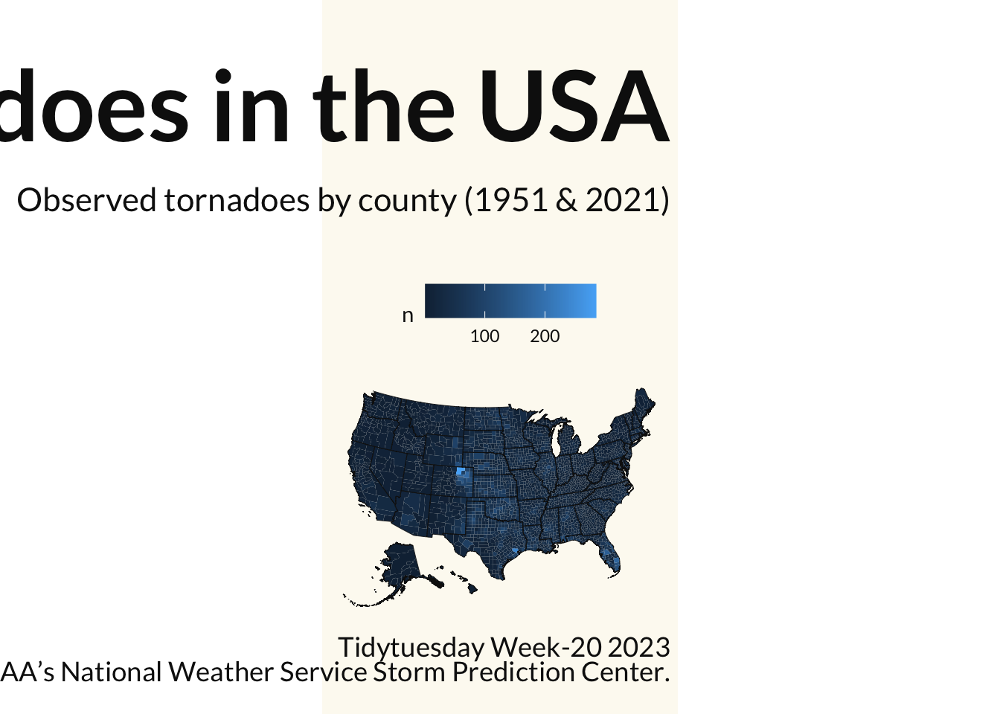

# To install the albersusa package use the below
# remotes::install_git("https://git.rud.is/hrbrmstr/albersusa.git")
library(tidyverse)
library(tidytuesdayR)
library(sf)
library(ggtext)
library(devtools)
library(showtext)
library(remotes) #To be able to install packages from repositories like Github
library(albersusa)Tornadoes in the USA
Tidy Tuesday Week 20 (05/15 - 05/21)
Tidy Tuesday Data
The tidytuesdayR package is a convenient way of reading in the data. You can install it using the CRAN library (i.e., install.packages("tidytuesdayR")). Of course, this loads the READMe file and all the relevant data sets datasets for the week of interest. You read in the specific data you need using either the ISO-8601 date or year/week (see examples below).
tuesdata <- tidytuesdayR::tt_load('2023-05-16')tuesdata <- tidytuesdayR::tt_load(2023, week = 20)
Note that the tt_load function will download all the TidyTuesday data that is available and stores them in the resulting tt_data object. To access the data, use the $ or [[ notation and the name of the dataset.
Alternatively you an read in the data manually from the TidyTuesday Github page, via the readr package from tidyverse (see below).
tornados <- readr::read_csv('https://raw.githubusercontent.com/rfordatascience/tidytuesday/master/data/2023/2023-05-16/tornados.csv')Package Libraries
I am going to use tidyverse (which contains, packages like readr, dplyr, lubridate, and ggplot2). Of course I also need tidytuesdayR to gain access to the tidy Tuesday data (typically run this separately, to obtain the data and then manipulate it). The albersusa is now an archived package that provides tools, shapefiles & data to work with an “AlbersUSA” composite projection in R. The sf package ensures a standardized way to encode spatial and vector data. And the ggtext package supports text rendering with ggplot2.
Data
## Get the data
tt_data <- tt_load("2023-05-16")
Downloading file 1 of 1: `tornados.csv`tornados <- tt_data$tornados %>%
write_csv(path = "data/20230515tornados.csv")
# Create a data object with geometry that aligns with the albers projection.
df1 <- tornados %>%
as_tibble() %>%
select(yr, slat, slon) %>%
st_as_sf(coords = c("slon", "slat"), crs = st_crs(4326))%>%
st_transform(us_laea_proj)
# Using albersusa package we retrieve U.S. county composite map ( I can also create a separate U.S. state composite map (data objects that contain the polygon information.)).
df2 <- counties_sf(proj = "laea")
df3 <- albersusa::usa_sf(proj = "laea")
# Bind the county composite to the tornado composite map we have created. We use the st_join function which is used for joining spatial data files.
df1cty <- df2 %>%
st_join(df1, left = TRUE)
# Summarize data by the number of tornadoes per county.
ctytornados <- df1cty %>%
group_by(state_fips) %>%
count(county_fips, drop = F)
# tornados <- readr::read_csv('https://raw.githubusercontent.com/rfordatascience/tidytuesday/master/data/2023/2023-05-16/tornados.csv')
#
# tornadoes_sf <- tornados |>
# select(yr, slat, slon) |>
# st_as_sf(coords = c("slon", "slat"), crs = 4326) |>
# st_transform(albersusa::us_laea_proj)
#
# counties_sf <- albersusa::counties_sf(proj = "laea")
# states_sf <- albersusa::usa_sf(proj = "laea")
#
# tornados_by_county <- st_join(counties_sf, tornadoes_sf, left = T)
#
# county_tornados <- tornados_by_county |>
# count(county_fips, drop = F)Specify Fonts
I have become fond of the Quicksand font of late. It is a san-serif font, that feels easy on the eyes, my eyes at least. Additionally, it doesn’t seem too playful.
font_add_google(name = "Quicksand", family = "Quicksand")
font <- "Quicksand"Specify Colors
I have taken a liking to the Tablea colorblind palette.
color1 <- "#dee2e6" #To be used for parts of the plot.
color2 <- "#252324" #To be used for the Axis, the points in the scatter plot, and the textCreate Plots
ctytornados %>%
ggplot() +
geom_sf(aes(fill = n), linewidth = 0.00125, color = NA) +
geom_sf(data = df3, fill = NA, color = "#111111", linewidth = 0.15) +
labs(
title = "Observed Tornadoes in the USA",
subtitle = "Observed tornadoes by county (1951 & 2021)",
caption = "Tidytuesday Week-20 2023<br>
Data: NOAA's National Weather Service Storm Prediction Center."
) +
theme_minimal() +
theme(
text = element_text(family = "Lato", color = "#111111"),
panel.grid = element_blank(),
axis.title = element_blank(),
axis.text = element_blank(),
legend.position = "top",
plot.title = element_text(size = rel(4.5), face = "bold", hjust = 1, margin = margin(t = 1, b = .5, unit = "cm")),
plot.subtitle = element_text(size = rel(1.5), hjust = 1, margin = margin(b = 1, unit = "cm")),
plot.caption = element_markdown(size = rel(1.25),hjust = 1, margin = margin(t = 0.25, b = 0.5, unit = "cm")),
plot.background = element_rect(fill = "#fdfaf1", color = NA),
plot.margin = margin(c(0.25, 0.125, 0, 0), unit = "cm")
)
ggsave(filename = "20230516TTa.png", width = 10.5, height = 10.5, dpi = 300, device = ragg::agg_png)So I am not overly ecstatic with this image. It doesn’t show much in the delineation in terms of the number of tornadodoes by county. Additionally the chart appears to be backwards. This is